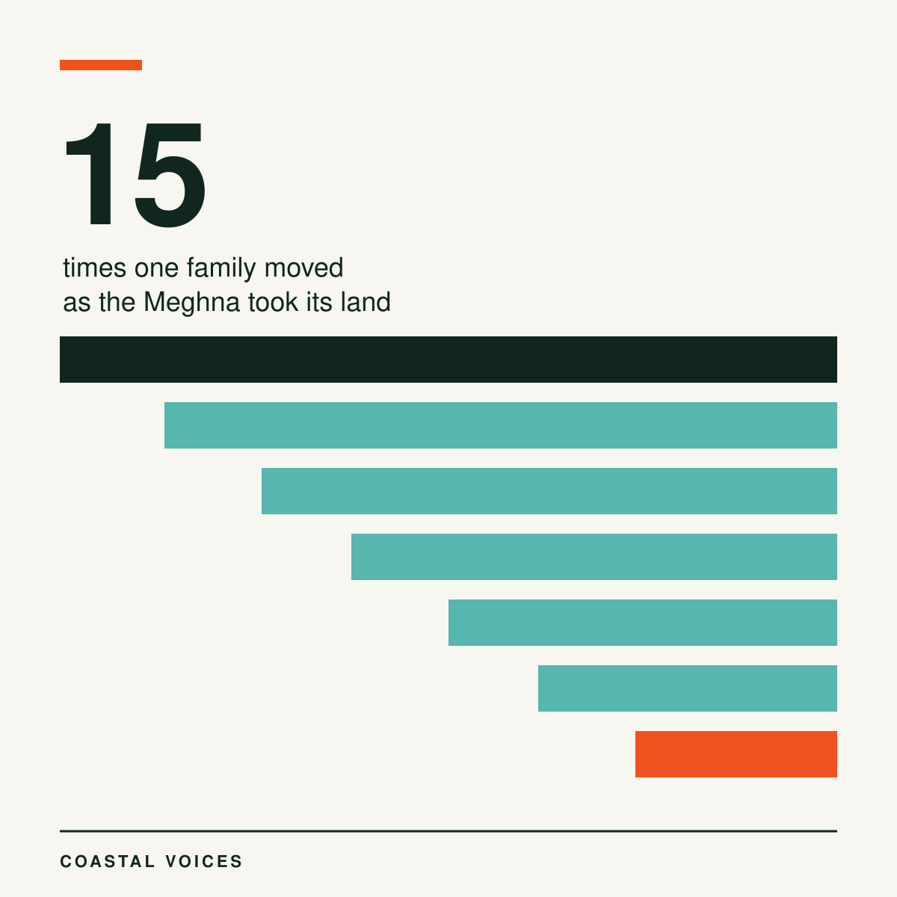
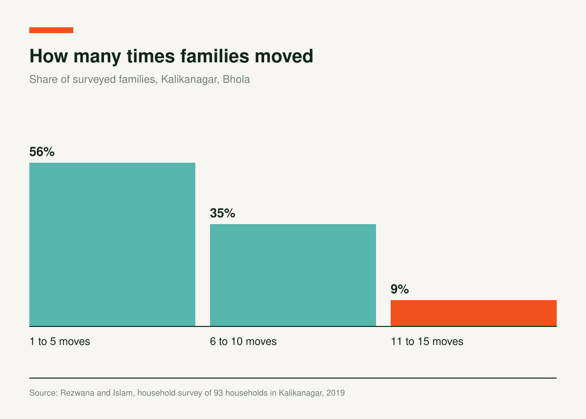
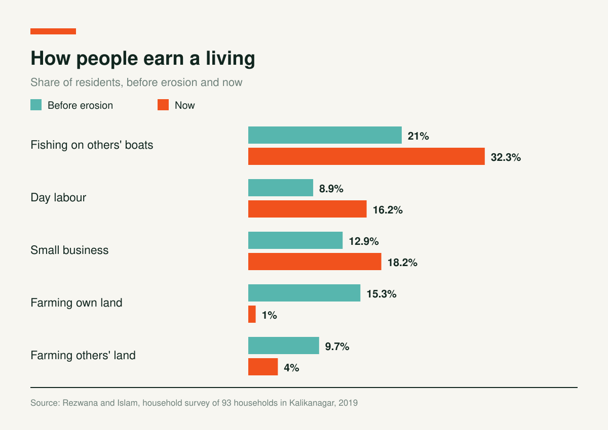

Moved 15 Times: Life on the Eroding Bank of the Meghna

Kalikanagar sits on the active bank of the Meghna River, in Kachia Union of Bhola Sadar Upazila. Most people here fish for a living. The village has lost most of its land to the river over the last 20 to 25 years.
The 2011 census counted 120 households and 605 people in the village. Many of those households now live in nearby villages. Nahid Rezwana and Saadi Islam surveyed 93 households in 2019 and ran interviews and group discussions to see what the river had done to them.

A Home That Does Not Stay Put
Residents told the researchers they had changed homes more than once, up to 15 times. In the survey, 56% of families had moved one to five times, 35% six to ten times and 9% eleven to fifteen times.

Children make up 25.46% of the people on the move, older people 4.5% and women 48%. About 85% of the families now live in the nearby village of Bhabanipur or have left the area.
The Price of Moving
Every move costs money. In the survey, 84% of residents were in debt, with amounts from 50,000 to 250,000 taka. About 85% of families borrowed to change places. Many needed more than one lender: 61.29% borrowed from NGOs, 58% from relatives, moneylenders, friends or neighbours, and 42% from banks or associations. Seventy one percent of borrowers paid interest.
From Farm to Boat to Day Labour
The river changed what people do. Before the erosion, 15.32% of residents farmed their own land. Now 1.01% do. The share working as day labourers rose from 8.87% to 16.17%. Fishing on someone else's boat rose from 20.97% to 32.32%.

Income fell with it. Before the erosion, 55.68% of families lived on less than 10,000 taka a month. Now 86.52% do. By the $1.90 a day measure, 93.1% of people in the survey live below the poverty line. Two thirds of families, 66%, live on rented or borrowed land. Only 34% live on their own.
No Address, No Roots
Locals call the survivors nodi bhanga manush, people who lost everything in the river. A local businessman, aged 50, told the researchers: “We are always treated as the floating people without any root, as if we are guilty for our fate.” A housewife, aged 40, said it is hard to arrange a good marriage for a daughter without a permanent address.
Schooling suffered. About 96.7% of survivors did not finish primary education, and 46.1% could not attend school in childhood. Health care is close: Bhola city is 20 to 25 minutes away. Yet 77% of residents do not visit any health centre for common problems. They go to village doctors, herbalists or the local dispensary. And 93% of births take place at home.
The government declared riverbank erosion a disaster in 1993. The authors say plans exist at the national level but do not reach households, and that the psychological effects of erosion rarely get attention in them.